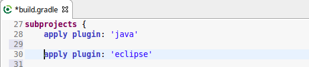
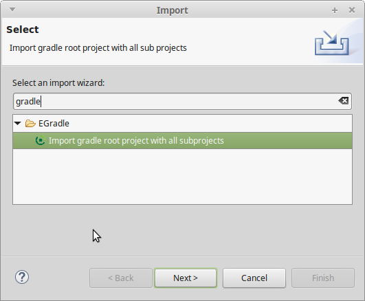
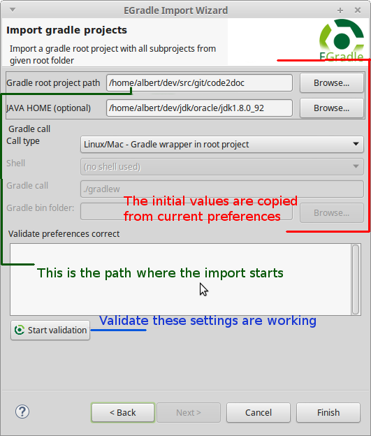

User guide
User guide
Import gradle projects
Preconditions
EGradle does no magic to your build files. You have to apply the 'eclipse' plugin inside your build.gradle file.

Import gradle root and all subprojects by EGradle importer
EGradle contains an importer - simply call ""File->Import..." and enter "gradle"


The settings for gradle root project path, global java home
settings and gradle call type are initially copied from current
preferences - if there exists a setup.
What happens?
What happens when you call finish button?
- All eclipse projects which are representatives of the new gradle root project location are closed
- A gradle call "cleanEclipse elcipse" is executed
- If the gradle call is sucessful:
- Old subprojects are deleted (without content)
- Old Virtual root project is removed
- The new generated eclipse sub projects are imported into workspace
-
If the root project is a multi project,
a new Virtual root project will be created, if it's just a single gradle project
no virtual root project is created (because unnecessary - all stuff is inside single project itself)
- If the gradle call was NOT sucessful the former operations are undo'ed:
- The former closed projects will be reopened
Reimporting current root project
What happens when you keep the settings of current preferences?
The same as described above. But when do you need this? When you switch between branches
it can happen that you renamed projects, added or deleted projects etc. The branch switch will
leave "zombie" projects or new projects (which maybe are referenced) are not in workspace. The
import process with same settings will all do this automatically...
Top
Import by standard eclipse way
After Setup is done for your root project,
you can use either
- EGradles
refresh eclipse dependencies button or
- use a console of your choice and call inside root project the
gradle task "eclipse".
After this is done, use "File - import ... existing projects"
inside eclipse and import all projects from root folder.
 |
You should not try to import the gradle root project itself
as a normal eclipse project. Instead use the Virtual root project feature!
|
Top